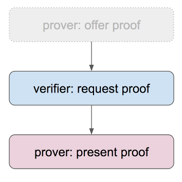

Negotiate a Proof¶
Indy-SDK Developer Walkthrough #5, Python Edition
[ Java | .NET | Node.js | Objective C ]
Prerequisites¶
Setup your workstation with an indy development virtual machine (VM). See prerequisites.
Steps¶
Step 1¶
In your normal workstation operating system (not the VM), open a python editor of your choice and paste the code from template.py into a new doc. We will be modifying this code in later steps.
Save the doc as negotiate_proof.py.
This is a very simple app framework into which you’ll plug the code you’ll be writing.
Step 2¶
This how-to builds on the work in “Issue Credential”. Rather than duplicate our explanation of those steps here, we will simply copy that code as our starting point.
Copy the contents of step2.py into
negotiate_proof.py on top of the Step 2 code goes here placeholder comment.
Save the updated version of negotiate_proof.py.
Step 3¶
Proof negotiation typically begins when a verifier (also called a relying party) requests proof. (As with credential issuance, the process has three logical phases, but it is rare to begin with a proof offer. However, if an initial proof request is met with a counter-offer, the offering phase of the sequence becomes relevant.)

A proof request is a JSON file that describes what sort of proof would satisfy the relying party.
Once the proof request is received, a holder of credentials must scan their identity wallet to find out which credentials could be used to satisfy the request. (Wallet scanning is inefficient, but this does not cause problems for dozens or hundreds of credentials. At higher scale, a new mechanism is needed. Work is underway to add index-driven search to indy wallets. Visit #indy-sdk on Rocket.Chat to learn more.)
Copy the contents of step3.py into
negotiate_proof.py on top of the Step 3 code goes here placeholder comment.
Save the updated version of negotiate_proof.py.
Step 4¶
At this point, the holder becomes a prover by generating and presenting
a proof. This is done by building some JSON that selects the credentials
(out of those identified as valid candidates in the previous step),
that the prover wishes to use to satisfy the request. The prover calls
anoncreds.prover_create_proof() with appropriate parameters, and the
proof is created.
Copy the contents of step4.py into
negotiate_proof.py on top of the Step 4 code goes here placeholder comment.
Save the updated version of negotiate_proof.py.
Step 6¶
Finally, the verifier needs to check to be sure the proof that’s presented
satisfies their criteria. This is easy; just call anoncreds.verifier_verify_proof().
Copy the contents of step5.py into
negotiate_proof.py on top of the Step 5 code goes here placeholder comment.
Save the updated version of negotiate_proof.py.
Step 6¶
Run the finished code and observe the whole sequence.
More experiments¶
You might try the “Send a Secure Message” how-to.